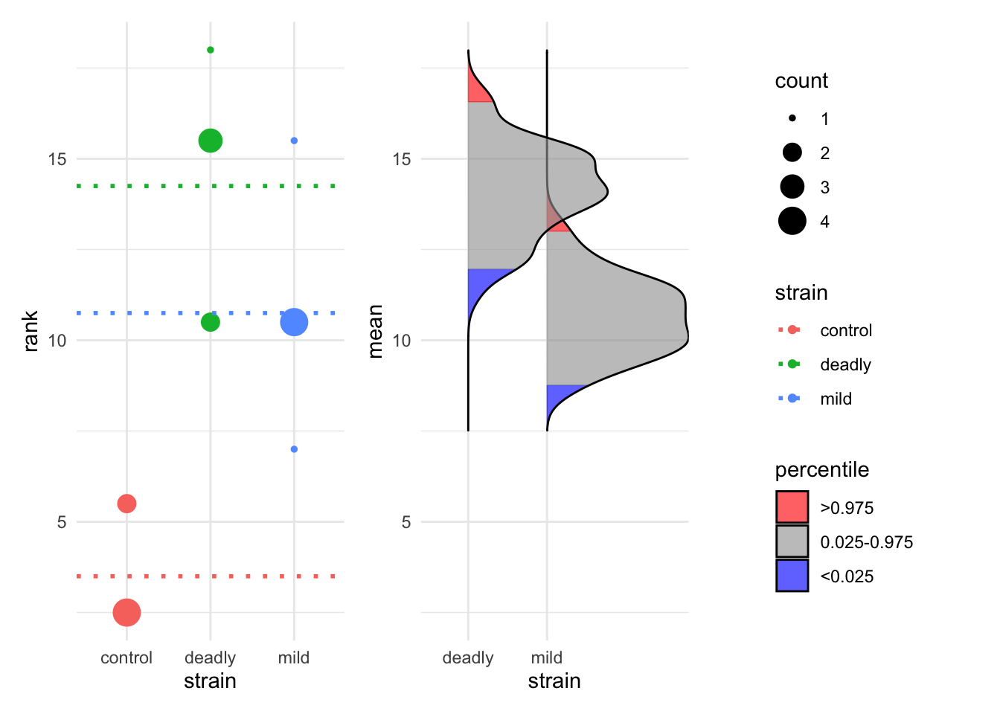
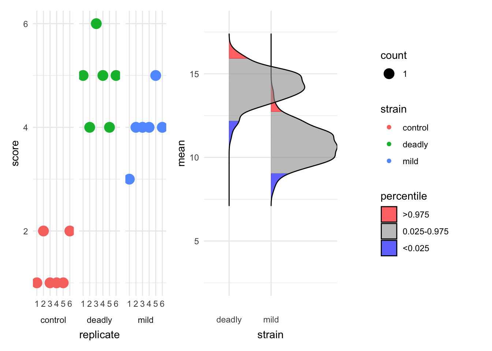

3 Putting the pieces together
- Questions
- How do I combine effect sizes and confidence intervals to create an ‘ensemble’?
- Objectives
- Understand how to use multiple estimation statistics in plots for meaningful interpretations
- Be aware of a range of packages that can aid this
- Keypoints
- A good statistical analysis combines \(p\)-values, effect sizes and confidence intervals
- A good plot shows the ‘ensemble’ well
Now that we’ve studied the two main estimation statistics principles - the effect size and the confidence interval, we should start to look at how to apply them in our work. We should look at bringing them together in an ensemble of statistics to give a clear picture of magnitude of difference (from effect size) and range of the estimate (from a confidence interval). The methods for this are graphical and based around plots.
In this chapter we will look at different plots and plot elements that use our computed estimation statistics clearly and informatively such that we can draw conclusions without hypothesis tests.
3.1 Incorporating estimation statistics into plots
You are likely familiar with this sort of plot, it is pretty much the most standard plot around, the bar chart with error bars. This one is of our mouse_wt data.
It is a very poor plot, for reasons we discussed in the preamble to this course and even in the literature, not least in this article by Weissgerber (2015). Another MAJOR thing about this plot is that it is only appropriate when the \(y\)-axis data are continuous. When you have discrete or categorical data on the \(y\)-axis, then this plot DOES NOT APPLY AT ALL. You can see a fuller discussion of why here.
Even though we do have continuous data in this example of mouse mass, the bars and error bars serve to hide the spread and patterns in the numbers, hiding the opportunity to understand what is going on in the data as clearly as possible, and if we apply tests blindly, they can lead us to false conclusions. The least we could do to avoid this would be to release the data! Recall how we can show each data point with a simple ggplot geom_jitter() call.
This is much clearer, we can see all the spread of and patterns in the data. This sort of dotted plot should always be a first step in plotting your data.
Let’s work towards look at adding a 95% percent CI of the mean on. First, an approach that doesn’t do this, but that you might be tempted to use as a shortcut.
3.1.1 The Box Plot
A box plot (or more properly a box and whisker plot) is easy to add to a ggplot, and it is a great geom for showing features of the data like mean and spread, but it doesn’t do a 95% CI of the mean - not quite.
Here’s a general view of one, not our mouse data.
The thick horizontal central line shows the mean, which is useful. The edges of the box show the 25% to 75% IQR (interquartile range), a measure of the spread of the data in which the central 50% is covered by the box. The extent of the vertical lines (whiskers) show the IQR * 1.5 or the most extreme data point (whichever is smallest), the whisker is intended to show the data range. Any points that are beyond the range are drawn in individually and called outliers but they have no special statistical significance.
A further feature of the box plot, the notch, looks like this
Those little wedges show the extent of 1.58 * IQR / sqrt(n) which is roughly a 95% CI of the mean in normally distributed data, so it can be useful if you have normally distributed data. In this case (and only in this case) if the notches don’t overlap between groups you have a visual clue that there are differences between the groups.
The box plot shouldn’t be used on its own though. Here is one with our mouse data, including a notch.
base_plot + geom_boxplot(notch = TRUE, alpha=0.5)Notch went outside hinges
ℹ Do you want `notch = FALSE`?
Notch went outside hinges
ℹ Do you want `notch = FALSE`?The notch has gone wild in this one! This is because the sample size is so small (10 data points), the range of the notch goes out of the range of the box and the drawing of the lines in the box goes crazy. The box plot is here harder to interpret.
3.1.2 Adding a Normal CI using dplyr
To add a CI we can use the dplyr package to calculate the CI limits then add it to a plot. You will recall that it goes like this
- Use the
group_byfunction to group the data into respective groups to work on them one-by-one - Use the
summarizefunction to get the summary data we need for each group. We’ll need the mean mass, SD of mass and number of rows (n()). - Use the
summarizefunction to apply the formula we used for the Normal 95% CI - Use the
summarisefunction to add the CI upper and lower limits to the mean.
Note that steps 2 to 4 can be done in one pass. The code looks like this
ci_df <- mouse_wts %>%
group_by(group) %>%
summarize(mean = mean(mass),
n = n(),
s = sd(mass),
half_width = qnorm(0.975) * s / sqrt(n),
upper = mean + half_width,
lower = mean - half_width
)
ci_df# A tibble: 2 × 7
group mean n s half_width upper lower
<chr> <dbl> <int> <dbl> <dbl> <dbl> <dbl>
1 group1 22.7 10 8.16 5.06 27.7 17.6
2 group2 11.1 10 2.82 1.75 12.8 9.32And the resulting ci_df contains the calculated values including the upper and lower values of the CI.
We can apply the summaries to our existing plot using geom_errorbar() and the data argument, which will use our new data frame as the data source exclusively for this geom.
Because our new data frame doesn’t have the original data in it, we have to turn off the original data mapping aes() with the inherit.aes argument and rename the \(x\) axis and colour in a new aes(). We should also set the width of the cross lines at the limits of the error bars as they come out comically wide by default.
base_plot + geom_errorbar(data = ci_df, inherit.aes = FALSE, aes(x=group, ymax=upper, ymin=lower, colour=group), width=0.25)And there we have a clear view of the 95% CI of the means in our groups.
3.1.3 Non Normal CIs
To add a non-normal CI we need to first calculate the CI using bootstrap resampling. This is a semi-involved process, the dabestR package makes it easy, so we’ll look at using that. We will use it to make two specific types of plot, the Gardner-Altman (Gardner and Altman 1986) plot and the Cumming plot (Cumming 2012). So far we’ve concentrated only on continuous \(y\) data, so we will also look at making a Derevnina plot (Derevnina et al. 2021), a variant for categoric data, with the besthr package.
3.2 The Gardner-Altman Plot
Invented in 1986 by Gardner and Altman, this is a plot for two group continuous data that can show a choice of effect size and the 95% bootstrap CI and distribution in a single panel.
Let’s make one with dabestr
The first step is to load our mouse_wts data into a dabest object. We must specify the \(x\) and \(y\) variable names and using the idx argument, the two groups to be compared. The first group will be considered the base for comparison group. We must also tell the function whether these data are paired or not.
library(dabestr)
dbest_data <- load(mouse_wts, group, mass, idx = c("group1", "group2"))
dbest_dataDABESTR v2025.3.15
==================
Good afternoon!
The current time is 14:41 p.m. on Monday November 03, 2025.
ffect size(s) with 95% confidence intervals will be computed for:
1. group2 minus group1
5000 resamples will be used to generate the effect size bootstraps.We get a summary that is very friendly and let’s us verify whether we entered the data properly.
We can now do an effect size calculation to add to the data object. Here we’ll use the mean sample difference, but there are other options, including a cohens_d() function.
dbest_with_mean_diff <- mean_diff(dbest_data)We can now draw the plot with the generic plot() function.
dabest_plot(dbest_with_mean_diff)This plot is extrememly informative and gives us a super clear indication of our data, the points are shown, the sample size is quoted, the effect size is plotted and the bootstrap CI and distribution are plotted. This is everything we need from a plot and statistical procedure. Importantly, we can conclude that these two samples are not likely to be the same without relying on opaque statistical tests. The plot and the generated numbers also make any argument that the observed differences are significant clearly convincing.
3.3 The Cumming Plot
The Cumming plot extends the ideas of the Gardner-Altman plot into more groups and comparisons, named after Cumming who suggested designs like this in his paper (Cumming 2012).
The setup is similar, we will need some data with more groups in it, mouse_wt_4g. The othe major difference is that the comparison specification is wrapped in a list of comparisons.
library(dabestr)
mouse_wt_4g %>%
load(group, mass,
idx = list(
c('group1', 'group2','group3','group4')
)
) %>%
mean_diff() %>%
dabest_plot()The plot shows something similar to the Gardner-Altman in a two-panel layout to allow the bootstrap profiles space. Also the black lines show the extent of the standard deviation, with the mean represented by the gap.
As with the previous plot, this is easy to interpret, rich and informative and convincing. It is clear to see in this plot that the masses of group1 are substantially and significantly higher than the other groups. We see also that group2 is not different to group3 or group4, but group3 and group4 are different from each other.
3.4 The Derevnina Plot
The Gardner-Altman and Cumming plots work really well on continuous \(y\) data. As we have discussed before here, categorical or discrete data need a different representation. An extension of the ideas here for categoric data in general is the Derevnina plot, which was applied specifically to HR experiment score data in her paper (Derevnina et al. 2021).
The basic idea is the same, we have HR score data with e.g strain, replicate and score.
hr_scores strain replicate score
1 control 1 1
2 control 2 2
3 control 3 1
4 control 4 1
5 control 5 1
6 control 6 2
7 mild 1 3
8 mild 2 4
9 mild 3 4
10 mild 4 4
11 mild 5 5
12 mild 6 4
13 deadly 1 5
14 deadly 2 4
15 deadly 3 6
16 deadly 4 5
17 deadly 5 4
18 deadly 6 5We can use the besthr package to create analgous plots for this categoric data. The estimate() function requires the data, the \(y\) and \(x\) variable names and the name of the control in \(x\). It will return an estimation object, which we can plot.
library(besthr)
est_1 <- estimate(hr_scores, score, strain, control="control")
plot(est_1)Warning: Using `size` aesthetic for lines was deprecated in ggplot2 3.4.0.
ℹ Please use `linewidth` instead.
ℹ The deprecated feature was likely used in the besthr package.
Please report the issue to the authors.Picking joint bandwidth of 0.267
The resulting bootstrap estimations are performed on ranked data, the ranks are computed automatically for us and the resulting rank mean difference shown as dotted lines. The blue areas of the bootstrap distribution show the 95% CI for the mean rank. The plot is again very clear that the control has lower mean rank than each of the other two strains but the mild and deadly strains are not much different from each other.
We can see technical replicates if we have used them by extending the call to estimate to include these explictly and we can plot them by setting the which argument to just_data.
est_2 <- estimate(hr_scores, score, strain, replicate, control="control")
plot(est_2, which="just_data")Picking joint bandwidth of 0.358
The plot is clearer now about the spread of scores in different replicates.
Roundup
Ensemble estimation statistics give us a good view of differences in our data without relying solely (or at all) on reductive \(p\)-values.
3.5 References
Cumming, Geoff. 2012. Understanding the New Statistics: Effect Sizes, Confidence Intervals, and Meta-Analysis. New York: Routledge.
Derevnina, Lida, Mauricio P. Contreras, Hiroaki Adachi, Jessica Upson, Angel Vergara Cruces, Rongrong Xie, Jan Sklenar, et al. 2021. “Plant Pathogens Convergently Evolved to Counteract Redundant Nodes of an NLR Immune Receptor Network.” bioRxiv. https://doi.org/10.1101/2021.02.03.429184.
Gardner, M J, and D G Altman. 1986. “Confidence Intervals Rather Than p Values: Estimation Rather Than Hypothesis Testing.” BMJ 292 (6522): 746–50. https://doi.org/10.1136/bmj.292.6522.746.
Weissgerber, Natasa M. AND Winham, Tracey L. AND Milic. 2015. “Beyond Bar and Line Graphs: Time for a New Data Presentation Paradigm.” PLOS Biology 13 (4): 1–10. https://doi.org/10.1371/journal.pbio.1002128.